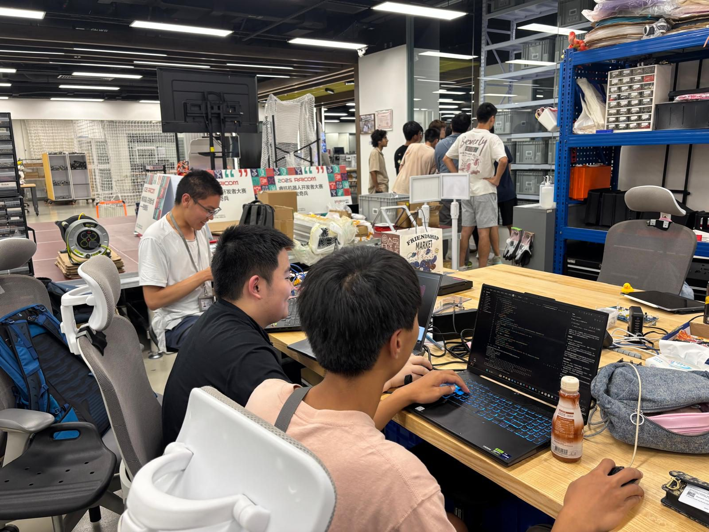
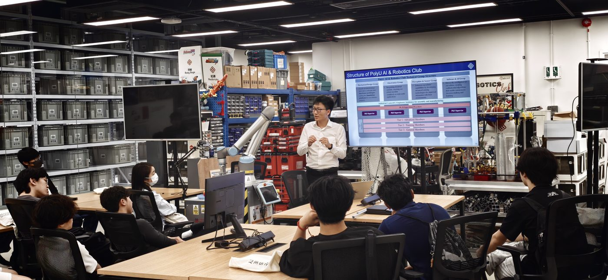
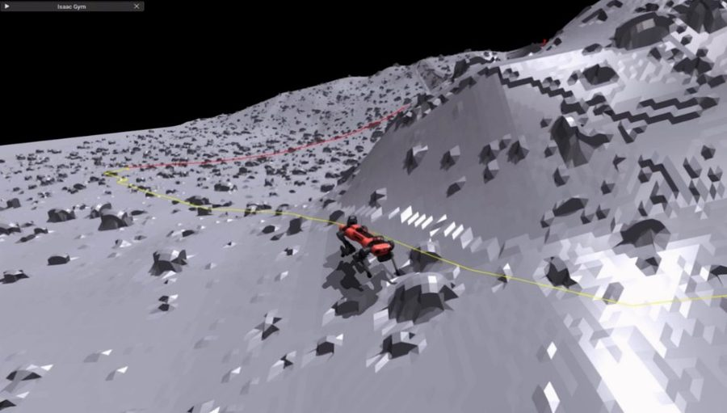

The Software & AI group writes the software that makes decisions. Members build the robot software architecture in ROS 2, write controllers and planners, train vision and learning models, and run everything in simulation before it goes on the real robot.
Testing in simulation first keeps people and hardware safe and makes results repeatable. The group works closely with Perception, which provides the robot's position and surroundings, and with Electronics, which carries out the commands.
- Mentors
- Zhao Jiaqi, Chen Yingming
- Student representatives
- To be announced after the 2026 placement
- Tools
- Python, C++, ROS 2, PyTorch, Isaac Sim or Gazebo, Git
- Works on
- The autonomous Builder Robot for Robocon 2027, the robot dog walking controller, drone and vehicle navigation
What the group works on
Software architecture
ROS 2 nodes and interfaces, launch files, logging, Git workflow and code review.
Motion control
PID and model predictive control for wheels, arms, drones and legged robots.
Planning and navigation
Path search, local obstacle avoidance and trajectory generation.
Vision and deep learning
Detection and segmentation models, and deploying them on onboard computers.
Reinforcement learning
Training walking and manipulation policies in simulation and transferring them to the real robot.
Simulation and strategy
Simulated test fields, automated tests and match strategy for competitions.
Engineering foundations
A few of the equations members use in this group. Training sessions build up to them step by step.
PID control
The most widely used controller in robotics, from motor speed to drone attitude.
A* search
Cost so far plus an estimate of the cost to the goal: the basis of grid and graph path planning.
Model predictive control
Plans the next N control inputs to follow a reference while respecting the robot dynamics.
Reinforcement learning objective
A policy with parameters θ is trained to maximise the expected discounted reward, for example for stable walking.
Policy gradient
How the policy parameters are updated, used in PPO for legged locomotion in simulation.
Cross-entropy loss
The training loss for classification and detection networks that recognise objects in camera images.
What we expect from members
Expectations grow with the member tier. Tiers are reviewed regularly, so members can move up as their skills grow.
Some programming experience. Learns Git, Linux and ROS 2 basics in introductory sessions.
Programs confidently in Python or C++, uses Git and ROS 2, and can implement and tune a controller or planner in simulation.
Owns the software architecture and autonomy of a robot, reviews code, plans tests and mentors Tier 2 members.
Before you join: Programming in Python or C++, linear algebra, basic control and an introductory machine learning course are good starting points. No member is expected to know everything at the start.
Photos


